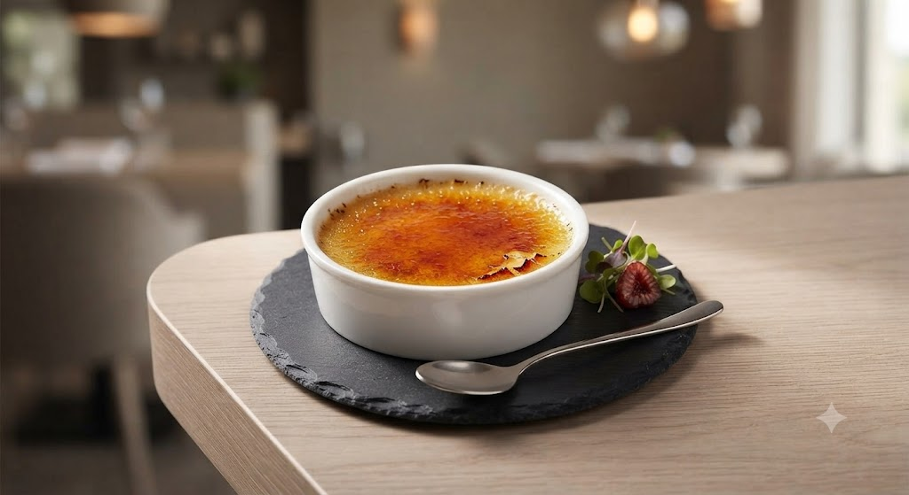
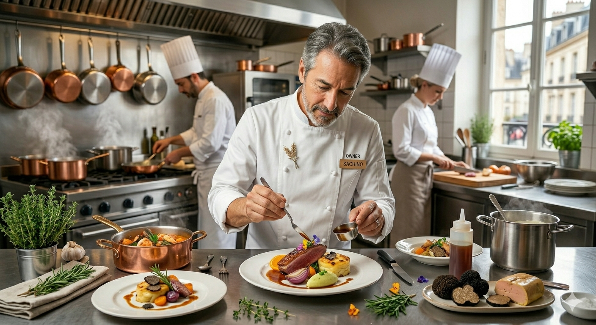

YUKIO SASAKIが選ばれる
3つの理由
食用花を贅沢に使い、他では見られない鮮やかな色彩で彩られた一皿。誕生日や記念日に、目でも味わう感動をお届けします。
個室3名・テーブル6名。こじんまりとした温かな空間だからこそ叶う、丁寧で親密なおもてなしと静かな時間。
ゆり根や黒豆を使った奥様手作りのパン。料理のソースを最後まで愉しむための、パン屋さんを超える絶品の名脇役です。

OWNER CHEF
佐々木 幸男
オーナーシェフ佐々木は、東京の高級フレンチで長年修行を積み、繊細な盛り付けと独創的な味わいを獲得しました。
札幌西18丁目に夫婦で小さな店を構えました。広告を出さず、ただ一皿一皿に真摯に向き合うことで、今では「予約の取れない隠れ家」として口コミで愛されるまでになりました。
寡黙なシェフと、温かく迎える奥様。この小さな空間にしかない、特別なフレンチの形があります。
「高級店は緊張してしまい、ゆっくり会話を楽しめない…」
「いつもと同じ店ではなく、驚きのある一皿に出会いたい…」
「子供連れでも、まずは本格的なフレンチが食べたい…」
完全予約制・わずか9席。アットホームな居心地の良さと、
都心高級店クオリティの芸術的な料理。その両立が私たちの誇りです。
「パンが絶品！お腹も心も満足感でいっぱいでした」
ランチで伺いました。予約席は窓側の個室で、こじんまりとした素敵なお部屋。 一品ごとの説明も丁寧で、料理はもちろんどれも美味しい。提供されるパンはその都度違う種類で、焼きたて。パン屋さんより美味しかったです（笑）。
「他では見ない、食用花の彩りに感動しました」
フレンチの固い雰囲気ではなく、ゆったりできるレストランです。それでいて、接客もワインのオススメも非常に丁寧。 食用のお花を華々しく彩った盛り付けが本当に綺麗で、えぐみも全くなく、味も最高でした。是非また来たいです。
YUKIO SASAKIでのひとときを、さらに記憶に残る思い出に。
ご来店いただいたお客様へ、間もなくお届けを開始する新たなサービスです。
本日の料理構成、シェフの手書きデッサン、そしてお客様の記念日とお名前を刻印した特製カードをお席にご用意。大切なお食事の思い出を形にしてお持ち帰りいただけます。
クチコミでも「パン屋さんより美味しい」と大好評のゆり根や黒豆を使った焼きたてパン。ご要望にお応えし、翌朝の朝食にも愉しめるお土産用アソートの販売を開始予定です。
至福のひとときをお約束するために
〒064-0801 北海道札幌市中央区南1条西20丁目1−27
地下鉄東西線「西18丁目駅」徒歩3分
専用駐車場あり
1日わずか数組の限られたお席です。
特別な日は、お早めのご予約をお勧めしております。